株式会社智翔館 社内向け
部門会議の新しい流れ
事前共有の確認・議題の追加・
Zoom参加 マニュアル
部門会議は、事前共有 → 議題の確認・追加 → Zoom で会議（録画） → 議事録の自動作成の流れで進めます。このマニュアルでは、会議に出る方がすること（事前共有を確認する・議題を足す・Zoom に入る）をまとめています。画面の写真に付けた赤い番号（1）は、本文の同じ番号の説明に対応しています。
- 対象
- 部門会議に出席する職員（全部門）／Zoom のホスト担当になった方
- アプリ
- 智翔館アプリ › 会議DX（ダッシュボード）（v1.34.0・2026年11月26日の画面）
- 最新版
- 智翔館アプリのヘルプデスク「マニュアル」タブからダウンロードできます
- 作成
- 2026年11月
※ 写真に写っている会議・議題・氏名・ミーティングID・パスコードは、説明のために用意した架空の例です。
1-1会議の前から議事録までの流れ
- 会議の前事前共有部門の担当が、会議の情報と議題を「部門会議」の画面から出す。Zoom ミーティングも一緒にできる
- 会議の前確認・議題の追加出席者がダッシュボードで議題を読み、「確認しました」を付ける。話したいことがあれば、ダッシュボードか智翔館AI から議題に足す（第2・3章）
- 当日Zoom で会議会議ごとに1人のホスト担当が［ホストとして開始］で始めると録画が始まる。ほかの方は［Zoomに参加］で入る（第4章）
- 翌朝まで議事録の自動作成録画から議事録を作って保存する。ダッシュボードの「直近の議事録」に出る（4-3）
- このマニュアルは、会議に出る方がすること（上の2・3）を中心に説明します。事前共有の出し方（上の1）は「会議DX 操作マニュアル」の部門会議の章をご覧ください。
- 議事録は、ホスト担当が［ホストとして開始］で会議を始めたときだけ録画され、自動で作られます（4-2）。
1-2事前共有を見る場所
会議DX を開くと、最初にダッシュボードが出ます。左上の「部門会議の事前共有」に、これからの部門会議が全部門分、日付の近い順に並びます。
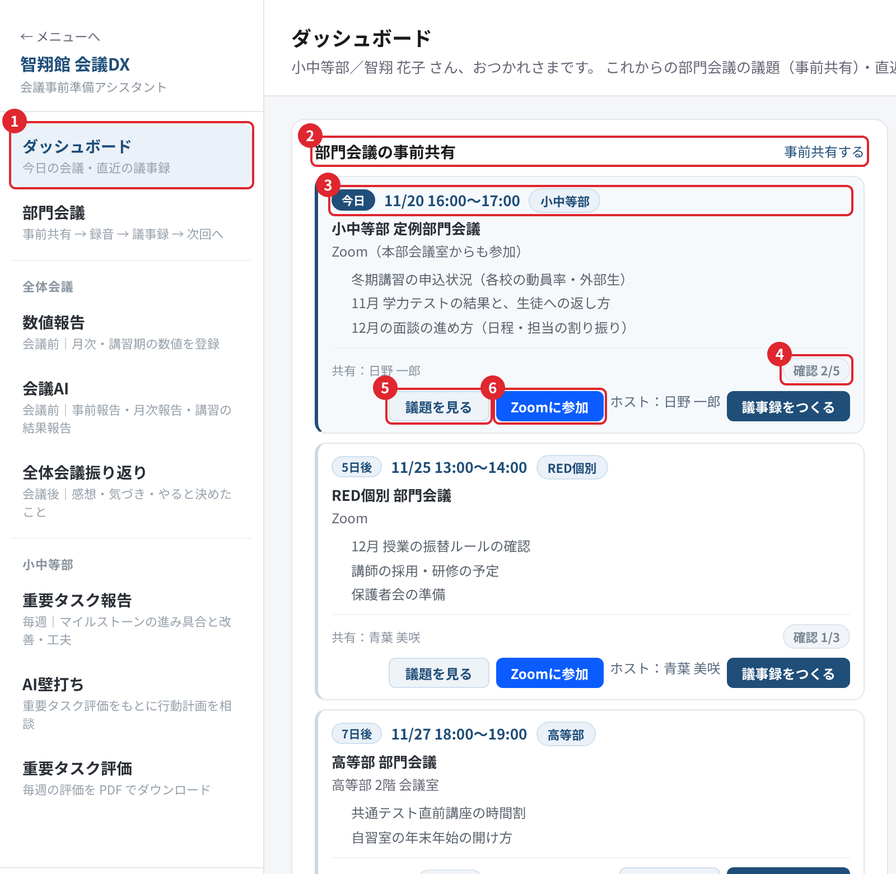
図1 ダッシュボードの「部門会議の事前共有」
- 1
ダッシュボード 左のメニューから、いつでもこの画面に戻れます。
- 2
部門会議の事前共有 これからの部門会議のカードが並びます。今日の会議がいちばん上です。
- 3
いつ・どの部門の会議か 「今日」「5日後」などの印、開催日時、部門が出ます。今日の会議は左に色の線が付きます。
- 4
確認 2/5 出席者5人のうち2人が、議題を確認済みという意味です（第2章）。全員がそろうと色が変わります。
- 5
議題を見る 議題の全文・出席者・Zoom の情報を開きます。確認のチェックと議題の追加は、ここから行います。
- 6
Zoomに参加 Zoom ミーティングを作ってある会議にだけ出ます（第4章）。
ポイント
カードは6件まで出ます。それより多いときは、カードの下の「部門会議の画面ですべて見られます」から、左メニューの「部門会議」で全部を見られます。議事録を保存した会議は、カードから外れて「直近の議事録」に移ります。
2-1議題を開く
自分が出る会議のカードの議題を見るを押します。会議の詳細が開きます。
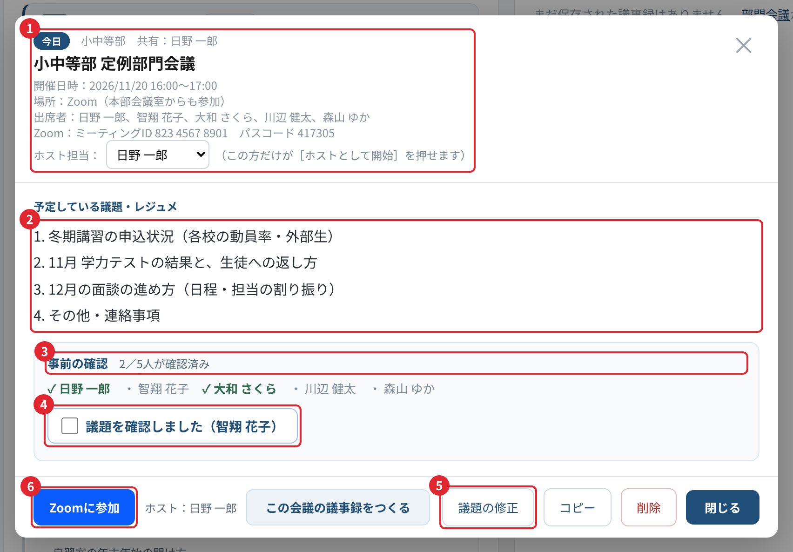
図2 事前共有の詳細（確認する前）
- 1
会議の情報 会議名・開催日時・場所・出席者と、Zoom のミーティングID・パスコードです。
- 2
予定している議題・レジュメ 議題の全文です。会議中もこの画面を開いたまま、議題を見ながら進められます。
- 3
事前の確認 出席者ごとに、確認済みの人は「✓」と緑の文字、まだの人は「・」で出ます。
- 4
議題を確認しました（自分の名前） ここにチェックを付けます（2-2）。
- 5
議題の修正 議題を書き足すときに押します（第3章）。
- 6
Zoomに参加 会議の時間になったら、ここから Zoom に入れます（第4章）。
2-2「議題を確認しました」にチェックする
議題を最後まで読みます。
議題を確認しました（自分の名前）のチェック欄を押します。すぐに記録され、保存のボタンはありません。
「事前の確認」の自分の名前に「✓」が付き、人数が1人ふえます。カードの「確認 2/5」も「確認 3/5」に変わります。
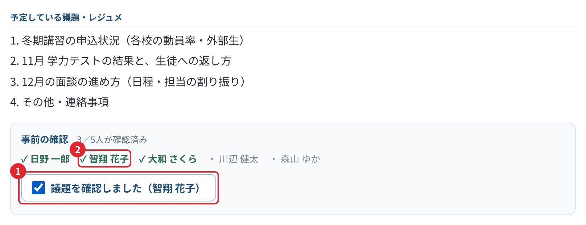
図3 チェックしたところ
- 1
チェックが付いた状態 間違えて付けたときは、もう一度押すと外せます。
- 2
自分の名前に ✓ ほかの出席者からも、確認したことが見えます。
チェック欄が出ないとき
- チェックを付けられるのは、その会議の「出席者」に名前が入っている本人だけです。出席者に入っていない会議では、チェック欄は出ません。
- 出席者に入っているはずなのに出ないときは、事前共有を出した方に、出席者の名前を直してもらってください（アプリにログインしている名前と同じ書き方で入っている必要があります）。
- 出席者が登録されていない会議では、「事前の確認」の欄そのものが出ません。
| 方法 | 向いているとき |
|---|
| ダッシュボードの議題の修正（3-1） | 議題を見ながら、その場で書き足したいとき。いまの議題の並びを自分で整えたいとき |
| 智翔館AI に頼む（3-3） | 「〇〇の会議に△△を足して」と言葉で頼みたいとき。足した人と日付が自動で入り、ほかの人の書き足しを消す心配がありません |
3-1［議題の修正］で書き足す
会議のカードの議題を見るを押して、詳細を開きます。
下のボタンの並びの議題の修正を押します。議題が書き換えられる欄に変わります。
いまの議題のいちばん下に、1行で書き足します。いまある議題は消さないでください。
保存するを押します。
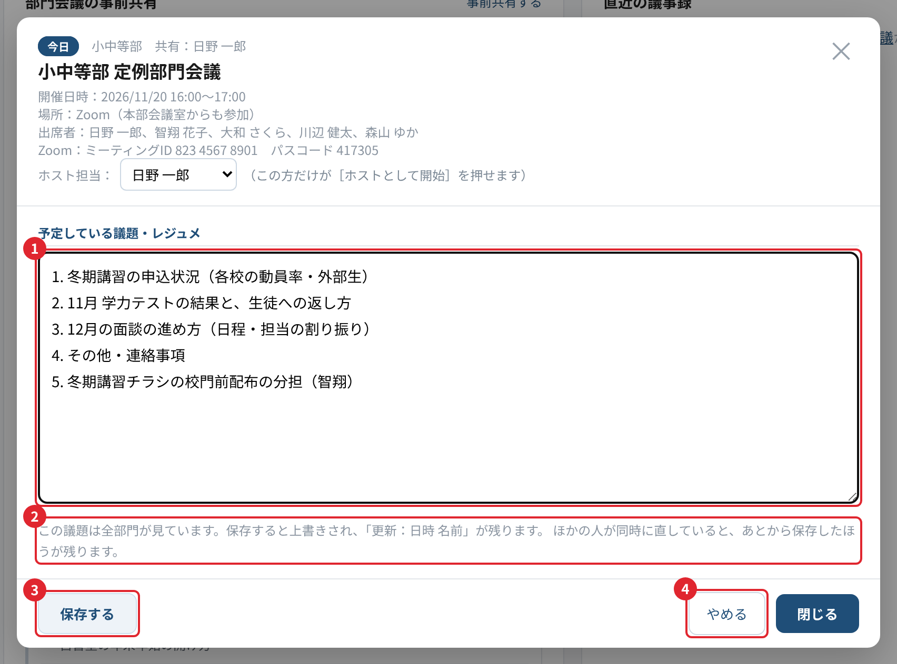
図4 議題を書き足しているところ（5行目を追加）
- 1
議題の欄 いまの議題がそのまま入っています。下に続けて書き足します。1行1件の箇条書きでも、レジュメを貼り付けても構いません。
- 2
注意書き この議題は全部門が見ています。保存すると上書きされ、「更新：日時 名前」が残ります。
- 3
保存する 書き足した議題を保存します。
- 4
やめる 保存せずに元の議題に戻します。書き足した内容は消えます。
気を付けること
- 議題の欄は全体が上書きされます。ほかの方の議題を消したり書き換えたりしないよう、書き足すだけにしてください。
- ほかの人が同時に直していると、あとから保存したほうが残ります。会議の直前など、書き足す人が多いときは、保存したあとに議題を開き直して、自分の行と他の方の行が両方残っているか確かめてください。
- 書きかけのまま閉じるや「×」を押すと、「保存していません」と確かめる表示が出ます。
- 議事録を保存した会議は、ダッシュボードから外れるため書き足せません。
3-2保存したあと
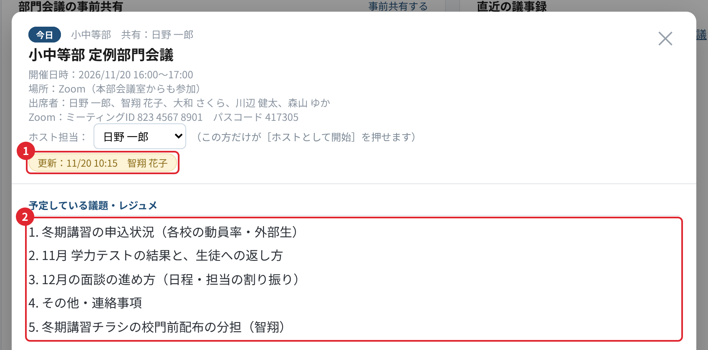
図5 保存したあと
- 1
更新：日時 名前 最後に直した日時と、直した人の名前が出ます。
- 2
書き足した議題 すぐに全部門のダッシュボードに反映されます。
3-3智翔館AI から議題を追加する
智翔館AI に会議の議題を聞くと、回答の下に議題を追加するが出ます。そこから、AI と話しながら議題を足せます。智翔館AI は、総合メニューの「智翔館AI」のカードから開きます。
智翔館AI に「次の小中等部の部門会議の議題を教えて」のように聞きます。
回答の下の議題を追加するを押します。
AI が「どの会議に、どんな議題を足しますか？」と聞くので、会議と議題を1行で書いて送ります。決めたいこと・目的も書くと、補足として入ります。
「議題の追加案」が出ます。内容を確かめて議題に追加するを押します。押すまでは追加されません。
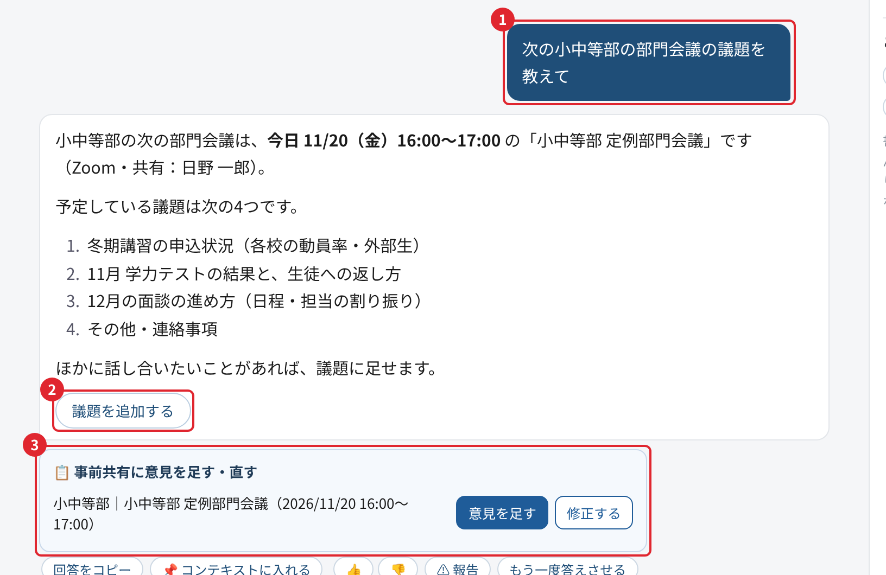
図6 智翔館AI に議題を聞いたところ
- 1
聞いたこと 「次の〇〇の会議の議題は？」「今日の会議の議題を教えて」など、ふつうの言葉で聞けます。
- 2
議題を追加する 押すと、議題の追加に進みます。
- 3
事前共有に意見を足す・直す 会議ごとに意見を足す修正するが出ます（3-4）。
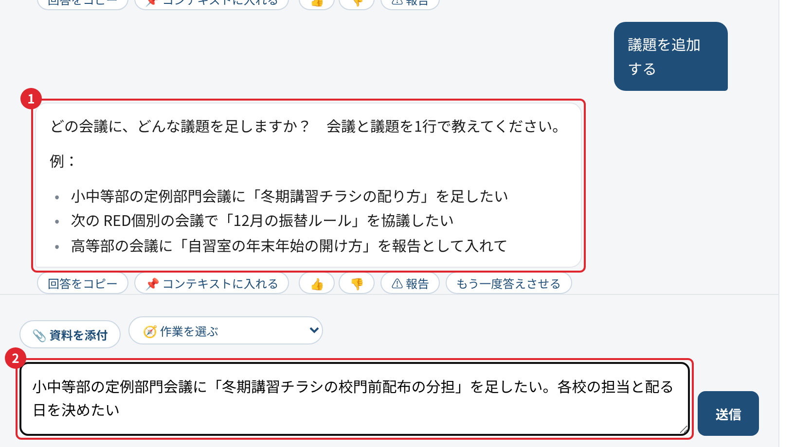
図7 AI が、会議と議題を聞き返したところ
- 1
AI の聞き返し 書き方の例が出ます。
- 2
入力欄 どの会議に、どんな議題を足すかを書いて送ります。
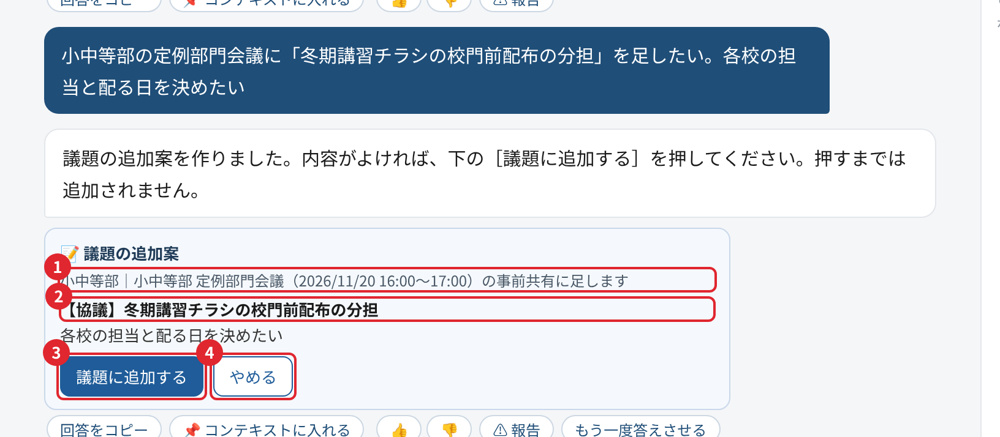
図8 議題の追加案
- 1
足す先 どの部門の、どの会議の事前共有に足すかが出ます。違う会議になっていたら、やめるを押して、AI に会議を言い直してください。
- 2
議題 【協議】【報告】などの見出しを付けた1行です。その下の小さな文字は補足です。
- 3
議題に追加する 押すと、事前共有の議題のいちばん下に足されます。
- 4
やめる 追加しません。
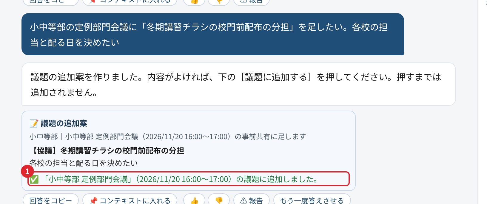
図9 追加できたところ
1「〇〇の議題に追加しました」と出たら完了です。事前共有の議題の最後に、次の形で1行足されます。
・【追加】【協議】冬期講習チラシの校門前配布の分担（各校の担当と配る日を決めたい）〔智翔 花子 11/20〕
ポイント
- 足した人の名前と日付は自動で入ります。いまある議題は書き換えず、最後に1行足すだけなので、ほかの人の書き足しが消えることはありません。
- その部門に、これからの会議の事前共有がまだ無いときは、「議題の候補」に入ります。会議の担当者が次に事前共有を作るときに取り込みます。
- 会議の名前が分かっているときは、最初から「小中等部の会議の議題に〇〇を入れて」と頼んでも、追加案が出ます。
3-4智翔館AI から議題に意見を足す
新しい議題ではなく、いまある議題への意見を書いておきたいときは、回答の下の意見を足すを押します（図6 の 3）。小窓が開きます。
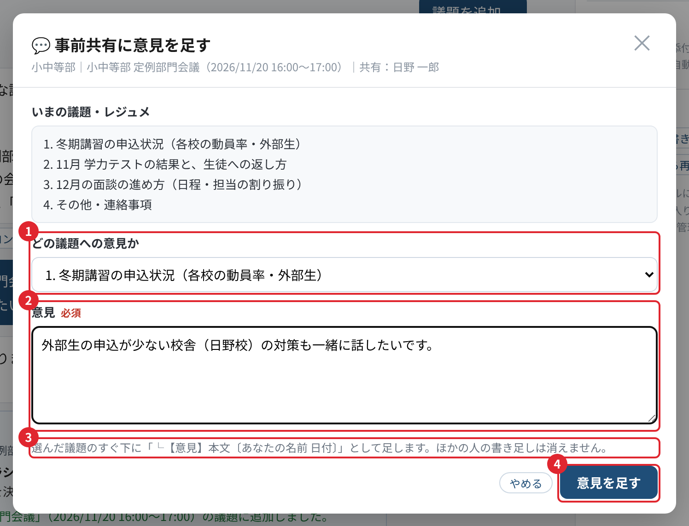
図10 「事前共有に意見を足す」の小窓
- 1
どの議題への意見か 議題を選びます。「会議全体について」を選ぶと、いちばん下に足します。
- 2
意見 意見を書きます。
- 3
足し方 選んだ議題のすぐ下に「└【意見】本文〔名前 日付〕」として足します。ほかの人の書き足しは消えません。
- 4
意見を足す 押すと保存されます。
［修正する］について
修正するは、会議名・日時・出席者・議題の全体を直す機能です。使えるのは、その部門の方・事前共有した本人・管理部門の方だけです。議題を足すだけなら、3-3 か意見を足すを使ってください。
4-1出席者として参加する
会議の時間になったら、ダッシュボードの会議のカード（または詳細）のZoomに参加を押します。
別のタブで Zoom のページが開きます。ブラウザに「Zoom Meetings を開きますか」と出たら、開くを選びます。Zoom のアプリが入っていないパソコンでは、ページの案内に沿ってブラウザから参加できます。
ホストが会議を始めると、会議に入れます。
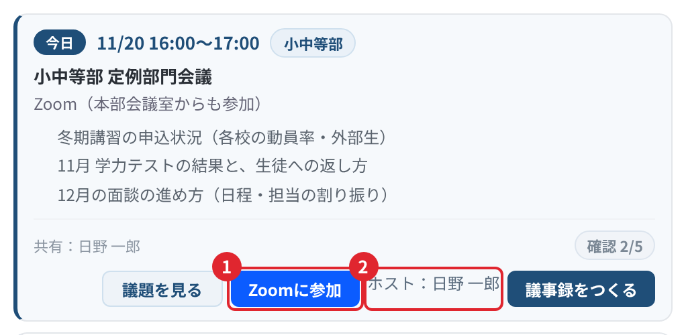
図11 カードの Zoom のボタン
- 1
Zoomに参加 Zoom ミーティングのある会議では、全員のカードに出ます。
- 2
ホスト：〇〇 この会議のホスト担当です。会議を始める（ホストとして開始する）のはこの方です（4-2）。
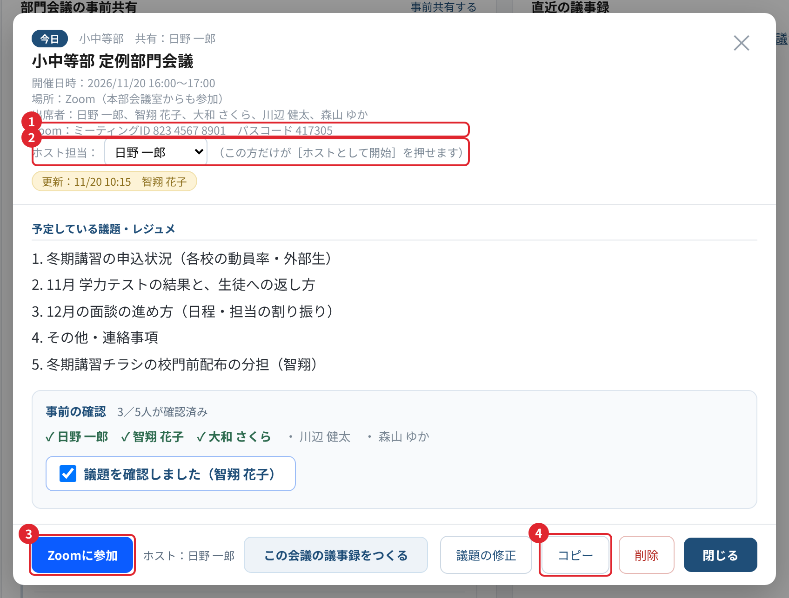
図12 詳細の Zoom の情報
- 1
ミーティングID・パスコード スマートフォンの Zoom アプリなど、アプリを開けない端末から入るときは、この番号を Zoom の「参加」に入れます。
- 2
ホスト担当 この方だけがホストとして開始を押せます。その部門の方・事前共有した本人・管理部門の方には選ぶ欄が出て、ここで替えられます（4-2）。
- 3
Zoomに参加 カードのボタンと同じです。
- 4
コピー 会議名・日時・場所・出席者・Zoom の参加URL・ID・パスコード・議題をまとめてコピーします。社外の方など、アプリを使わない方に送るときに使えます。
ポイント
Zoom のボタンが出ていない会議は、Zoom ミーティングが作られていない会議です（教室で集まる会議など）。Zoom で開くはずの会議でボタンが無いときは、事前共有を出した方に確かめてください。
4-2ホストとして開始する（ホスト担当）
Zoom のホストは、会議ごとに1人（ホスト担当）です。ホスト担当は、事前共有で Zoom ミーティングを作るときに決めます（自分か出席者から選び、選ばなければ事前共有した本人）。ホスト担当の方のカードと詳細には、ホストとして開始と参加者として入るが並んで出ます。会議を始めるときはホストとして開始を押してください。
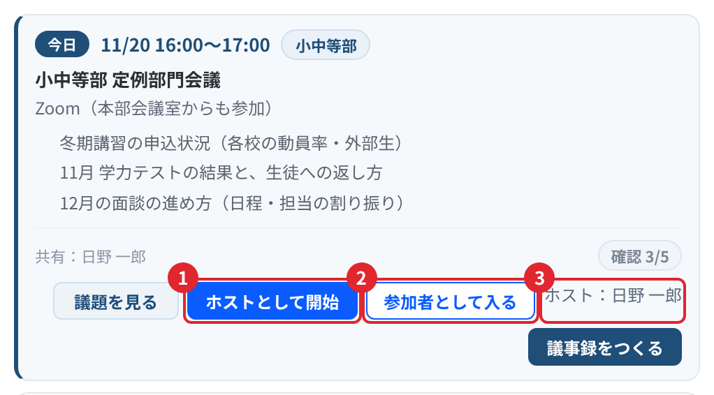
図13 ホスト担当の方のカード
- 1
ホストとして開始 ホストとして会議を始めます。このボタンで始めると、自動でクラウド録画が始まります。
- 2
参加者として入る ホストとしてではなく、出席者として入るときに使います。
- 3
ホスト：〇〇 いまのホスト担当です。
押したときに出る確認
ホストとして開始を押すと、開始の前に次の確認が出ます。読んでからOKを押すと、別のタブで Zoom が開きます。
ホストとして会議を開始します（クラウド録画が始まります）。
・ホストとして入るのは、ホスト担当の1人だけです。ほかの方は［Zoomに参加］から入ります。
・Zoom に「進行中のミーティングがあります」と出たら、同じ Zoom アカウントで別の会議が開かれています。
［終了］を押すと、その会議の全員が退出になります。押さずに閉じて、管理部門に連絡してください。
- すでに始まっている会議で押すと「この会議は、すでに始まっています」と出ます。参加するだけならキャンセルを押してZoomに参加から入ります。回線が切れたなどで、ホスト担当ご本人が入り直すときだけOKを押します。
ホスト担当を替える
当日来られなくなったときなどは、詳細の「ホスト担当」の欄で別の方に替えます。替えられるのは、その部門の方・事前共有した本人・管理部門の方です。替えると、新しい担当の方にホストとして開始が出ます。
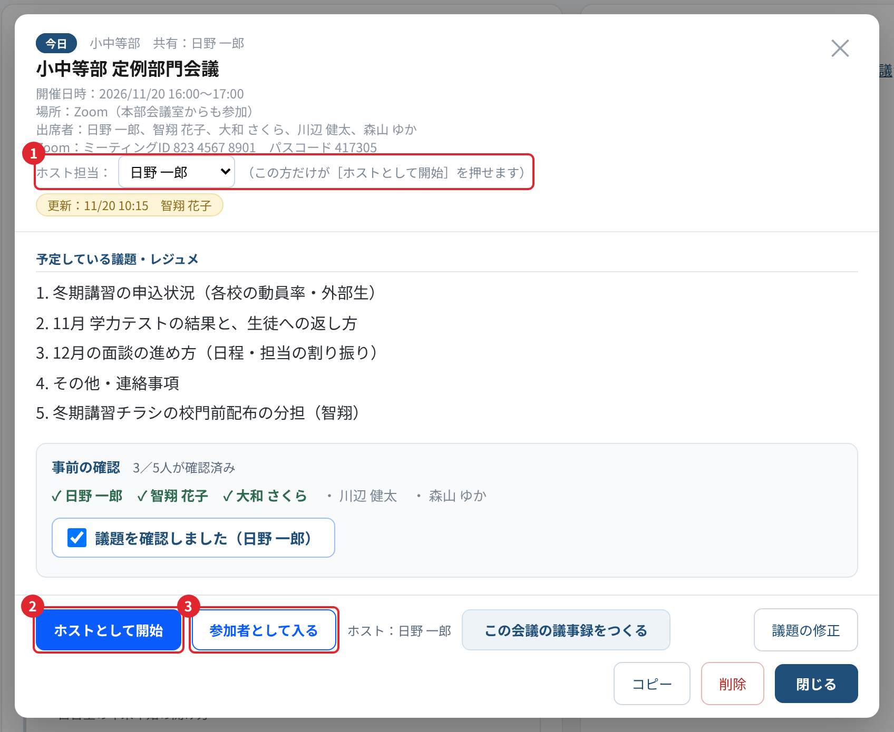
図14 ホスト担当の方が開いた詳細
- 1
ホスト担当 選ぶ欄から、ほかの方に替えられます。
- 2
ホストとして開始 カードのボタンと同じです。
- 3
参加者として入る 出席者として入ります。
録画と議事録について
- 議事録は Zoom の録画から作ります。ホスト担当が［ホストとして開始］で始めなかった会議（録画が無い会議）は、議事録が自動で作られません。
- ホストとして開始は、共通ログイン（メールアドレスとパスワード）で入っているときだけ使えます。部門と名前を選んで入る従来のログインでは、ボタンの代わりに次の案内が出ます。ログアウトして、メールアドレスとパスワードでログインし直してください。
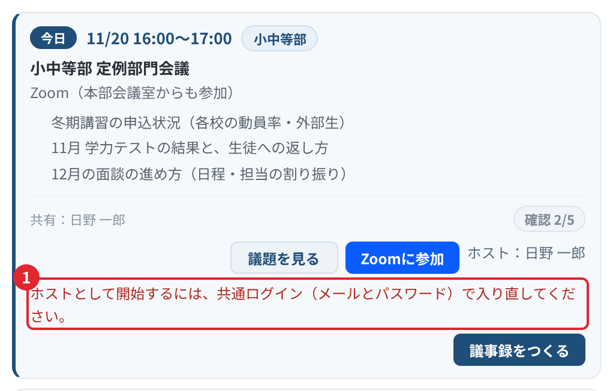
図15 従来のログインで入っているホスト担当の方のカード（1 の案内が出ます）
4-3会議のあと（議事録の自動作成）
- アプリが毎日午前1時と午前5時に、終わった会議（3日前まで）の録画を見回り、文字起こしと議事録を作って自動で保存します。会議の翌朝には、ダッシュボードの「直近の議事録」に出ます。
- 自動で作った議事録の先頭には「Zoom の録画から自動で作成した議事録です」と入ります。内容に誤りがあれば、議事録の修正するで直してください。
- 翌朝を待たずに作りたいときは、部門会議の画面に会議を読み込み、手順2の録画から議事録をつくるを押すと作れます（この場合は確認してから保存します）。使えるのは、その会議の部門の方・事前共有した本人・管理部門の方です。
| こんなとき | どうする |
|---|
| 自分の会議がダッシュボードに無い | まだ事前共有が出ていないか、カードが6件を超えています。左メニューの「部門会議」で全部の事前共有を見られます。議事録を保存した会議は「直近の議事録」に移ります。 |
| 「議題を確認しました」が出ない | その会議の出席者に自分の名前が入っていません。事前共有を出した方に、出席者に入れてもらってください（2-2）。 |
| 「確認の記録に失敗しました」と出た | 時間をおいて、もう一度チェックを押してください。 |
| 「保存に失敗しました」と出た（議題） | 書き足した内容を念のためコピーしておき、時間をおいてもう一度保存するを押してください。「管理者にご連絡ください」と出たときは、ヘルプデスクの「不具合の報告」から知らせてください。 |
| 智翔館AI の追加案の「足す先」が違う会議になっている | やめるを押し、「〇月〇日の〇〇の会議に」と会議を言い直してください。 |
| 書き足した議題が消えていた | ほかの方が同じ時間に議題を保存した可能性があります（あとから保存したほうが残ります）。もう一度書き足してください。 |
| Zoom のボタンが無い | その会議は Zoom ミーティングが作られていません。事前共有を出した方に確かめてください。 |
| ［ホストとして開始］が出ない | ホストとして開始できるのは、その会議のホスト担当の1人だけです（カードの「ホスト：〇〇」）。自分が担当のはずなら、詳細の「ホスト担当」を確かめてください。「共通ログインで入り直してください」と出ているときは、ログアウトして、メールアドレスとパスワードでログインし直します。 |
| ホスト担当が当日来られない | その部門の方・事前共有した本人・管理部門の方が、詳細の「ホスト担当」で別の方に替えてください（4-2）。 |
| Zoom に「進行中のミーティングがあります」と出た | 同じ Zoom アカウントで、別の会議が開かれています。［終了］は押さずに閉じて、管理部門に連絡してください。 |
| ［ホストとして開始］を押してもタブが開かない | ブラウザが新しいタブを止めていることがあります。アドレス欄の右に出るポップアップの許可を選び、もう一度押してください。 |
| 会議の翌朝になっても議事録が無い | ホスト担当が［ホストとして開始］で始めておらず、録画が無い可能性があります。部門会議の画面で、録音の音声から議事録を作ってください。 |